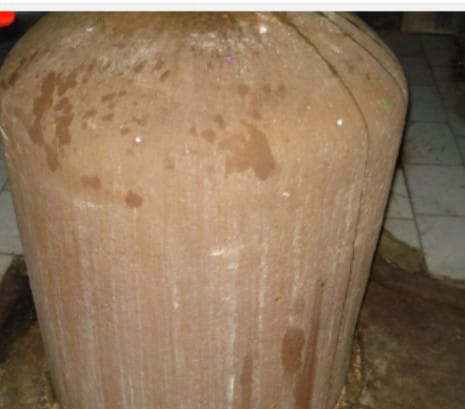

<?xml version="1.0" encoding="UTF-8"?><rss version="2.0"
	xmlns:content="http://purl.org/rss/1.0/modules/content/"
	xmlns:wfw="http://wellformedweb.org/CommentAPI/"
	xmlns:dc="http://purl.org/dc/elements/1.1/"
	xmlns:atom="http://www.w3.org/2005/Atom"
	xmlns:sy="http://purl.org/rss/1.0/modules/syndication/"
	xmlns:slash="http://purl.org/rss/1.0/modules/slash/"
	>

<channel>
	<title>Neelkantheshwar &#8211; Varanasi Temples</title>
	<atom:link href="index.html" rel="self" type="application/rss+xml" />
	<link>../../../../../index.html</link>
	<description>Temples of Varanasi as referred to in Kashi Khand</description>
	<lastBuildDate>Thu, 19 Jun 2025 05:16:46 +0000</lastBuildDate>
	<language>en-US</language>
	<sy:updatePeriod>hourly</sy:updatePeriod>
	<sy:updateFrequency>1</sy:updateFrequency>
	<generator>https://wordpress.org/?v=4.6.29</generator>
	<item>
		<title>NEELKANTHESHWAR</title>
		<link>../../../../../shiva-temples/neelkantheshwar/index.html</link>
		<pubDate>Mon, 10 May 2010 15:18:47 +0000</pubDate>
		<dc:creator><![CDATA[admin]]></dc:creator>
				<category><![CDATA[Neelkantheshwar]]></category>
		<category><![CDATA[Other Shiva Temples (L-R)]]></category>
		<category><![CDATA[Shiva Temples]]></category>
		<category><![CDATA[kedar ghat]]></category>
		<category><![CDATA[neelkanth]]></category>

		<guid isPermaLink="false">../../../../../p=416.html</guid>
		<description><![CDATA[Chapter 69 of Kashi Khand describes various Lings which were originally stationed elsewhere but have been installed in Kashi by Nandi. This chapter is very important. From Kalanjar mountains, Neelkanth Ling has been installed in Kashi. By worshipping this Ling, the devotees become equivalent to Lord Neelkanth (Lord Shiva). &#160; &#8212;&#8212;&#8212;&#8212;&#8212;&#8212;&#8212;&#8212;&#8212;&#8212;&#8212;&#8212;&#8212;&#8212;&#8212;&#8212;&#8212;&#8212;&#8212;&#8212;&#8212;&#8212;&#8212;&#8212;&#8212;&#8212;&#8212;&#8212;&#8212;&#8212;&#8212;&#8212;&#8212;&#8212;-   Kashi Khand, Chapter [&#8230;]]]></description>
				<content:encoded><![CDATA[<p>Chapter 69 of Kashi Khand describes various Lings which were originally stationed elsewhere but have been installed in Kashi by Nandi. This chapter is very important.</p>
<p>From Kalanjar mountains, Neelkanth Ling has been installed in Kashi. By worshipping this Ling, the devotees become equivalent to Lord Neelkanth (Lord Shiva).</p>
<p>&nbsp;</p>
<p><strong>&#8212;&#8212;&#8212;&#8212;&#8212;&#8212;&#8212;&#8212;&#8212;&#8212;&#8212;&#8212;&#8212;&#8212;&#8212;&#8212;&#8212;&#8212;&#8212;&#8212;&#8212;&#8212;&#8212;&#8212;&#8212;&#8212;&#8212;&#8212;&#8212;&#8212;&#8212;&#8212;&#8212;&#8212;-</strong></p>
<p><strong> </strong></p>
<p><span style="text-decoration: underline;"><strong>Kashi Khand, Chapter 69, Shlok 60</strong></span></p>
<p><strong> </strong></p>
<p><strong>नीलकण्ठेश्वरं लिङ्गं काश्यां यै: परिपूजितम</strong></p>
<p><strong>नीलकण्ठास्त एव स्युस्त एव शशिभूषणा:</strong></p>
<p>&nbsp;</p>
<p><strong>Those who worship Neelkanteshwar Ling in holy city of Kashi, themselves become Neelkant and Chandrabhushan (Lord Shiva).  </strong></p>
<p><strong> </strong></p>
<p><strong>&#8212;&#8212;&#8212;&#8212;&#8212;&#8212;&#8212;&#8212;&#8212;&#8212;&#8212;&#8212;&#8212;&#8212;&#8212;&#8212;&#8212;&#8212;&#8212;&#8212;&#8212;&#8212;&#8212;&#8212;&#8212;&#8212;&#8212;&#8212;&#8212;&#8212;&#8212;&#8212;&#8212;&#8212;&#8212;</strong></p>
<p>&nbsp;</p>
<p><strong><span style="text-decoration: underline;">LOCATION OF THE TEMPLE</span></strong></p>
<p>Neelkantheshwar is located at Ck.33/23, Neelkanth Mohalla. The locality has been named after Neelkantheshwar temple. <strong>Presently, this ling is inside the extended Kashi Vishwanath Corridor and photography is not allowed.</strong></p>
<p>There is another Neelkanteshwar Ling which is located in a small room just outside Kedareshwar temple on the steps towards Ganges. This Ling is also worshipped with all religious fervour.</p>
<div></div>
<p style="text-align: center;"> <strong>(NEELKANTESHWAR AT KEDARESHWAR TEMPLE)</strong></p>
<p>&nbsp;</p>
<p><strong><span style="text-decoration: underline;">TYPES OF POOJA</span></strong></p>
<p>The temple is open from 05.30 a.m. to 12.30 p.m. and from 04.00 p.m. to 10.00 p.m.  Aarties are performed in the morning and evening.</p>
<p>&nbsp;</p>
]]></content:encoded>
			</item>
	</channel>
</rss>
